Open Quantum Systems — Part II
TCL2 and NZ2
If a bath correlation is known, how should it drive an electronic density matrix? Two common answers are the second-order time-convolutionless equation (TCL2) and the second-order Nakajima–Zwanzig equation (NZ2). One evolves the current density; the other integrates its history. Twelve examples below show why that difference does not establish an accuracy ranking.
Part I explained how Gaussian HEOM stores bath memory in auxiliary density operators. This part makes a controlled reduction in ambition: truncate a generator or a memory kernel at second order in the system–bath coupling. We derive both equations, use a resonance approximation to anticipate their behavior, and then read the numerical examples. The analytic interpretation is a consistency check against existing results, not an independent blind prediction.
1. What information enters the reduced equation?
Set \(\hbar=1\), write the coupling strength explicitly as \(g\), and prepare a thermal bath independently of the electronic state:
The system observable is obtained from the reduced density, \(\rho_S(t)=\operatorname{Tr}_B\rho_{SB}(t)\). The two-point input is the unsymmetrized correlation with the later operator on the left:
Its real and imaginary parts retain fluctuations and response. Both are used below. The correlation-function note explains the physical meaning and thermal weights. When comparing conventions, note that the reverse product \(\langle B(0)B(\tau)\rangle_B\) is the complex conjugate of the convention used here.
A two-point correlation completely specifies a Gaussian bath influence under the assumptions in Part I. It does not make every second-order electronic equation exact. For a non-Gaussian bath, higher bath correlations contain additional information even if this \(C(\tau)\) is known exactly.
2. One second-order kernel, two equations
In the interaction picture of \(H_S+H_B\), let \(\mathcal L(t)X=-i[V_I(t),X]\). The full equation is \(\dot\rho_{SB,I}=g\mathcal L(t)\rho_{SB,I}\). Expanding its propagator and tracing the bath defines a reduced map:
The first-order term vanishes because the bath coupling is centered. Wherever the exact reduced map is invertible, its exact time-local generator is \(\dot\Lambda\Lambda^{-1}\). Expanding that generator gives \(g^2\dot M_2+O(g^3)\). Keeping only the second-order term gives TCL2.
Define the common kernel
The two approximations can now be compared without a change of picture:
The difference is the density on which the same kernel acts. TCL2 is time-local in the unknown density, but its coefficients retain the bath correlation over the entire interval. Neither equation here takes a Markov limit or a secular approximation. The current-versus-history distinction agrees with Babu and co-workers, Sections II.1–II.2.
How eliminating the projected bath gives NZ2
Use \(\mathcal PX=\operatorname{Tr}_B X\otimes\rho_B\), \(\mathcal Q=I-\mathcal P\), and \(R=\rho_{SB,I}\). Centering gives \(\mathcal P\mathcal L(t)\mathcal P=0\), while the preparation gives \(\mathcal QR(0)=0\). Thus
Let \(\mathcal G_Q(t,s)\) propagate the homogeneous equation in the \(\mathcal Q\) subspace. Integrate the second line and substitute into the first:
This is an exact memory representation. Replacing \(\mathcal G_Q=I_Q+O(g)\) inside its kernel gives NZ2. It truncates propagation in the eliminated sector; it does not retain the full system–bath dynamics merely because the history remains.
At fixed finite time, \(\rho_I(s)-\rho_I(t)=O(g^2)\). Multiplying this difference by the outer \(g^2\) explains why TCL2 and NZ2 first differ at \(O(g^4)\). This is not a uniform long-time error bound. In general the exact solution can also contain a third-order contribution that both methods omit. The even oscillator potentials used below have a stronger symmetry, \(B\mapsto-B\), so their odd coupling orders vanish and the first general omitted order is fourth.
The equation actually integrated
For the single Hermitian channel, tracing the double commutator gives
For reproducibility in the Schrödinger picture, define \(\mathcal L_0X=-i[H_S,X]\), \(\mathcal G_\tau=e^{\mathcal L_0\tau}\), and
The implemented TCL2 equation is
The implemented NZ2 equation is
The free propagation \(\mathcal G_\tau\) is essential: replacing the current Schrödinger-picture density by a bare historical density in the TCL2 formula would give a different equation.
Replacing the NZ2 history by auxiliary matrices
If \(C(\tau)=\sum_jc_je^{-\nu_j\tau}\), introduce
Differentiating these convolutions gives
These equations exactly localize the specified NZ2 convolution. They do not recover the higher-order feedback omitted by NZ2. For Hermitian physical densities \(R_j=Q_j^\dagger\), but independent variables are needed when applying the map to arbitrary non-Hermitian matrix units. The frozen runner uses an equivalent paired-frequency combination of these auxiliaries.
3. Predicting the population curves
To connect the formal equations to the examples, take \(H_S=\Delta\sigma_z/2\) and \(A=\sigma_x\). For the initially occupied upper state, the population sector closes. Define the kernels and their finite-time integrals:
TCL2 uses \(r_\downarrow(t)\) and \(r_\uparrow(t)\) in an instantaneous population equation. NZ2 convolves the corresponding kernels with past populations:
Now keep a dominant resonant pair of bath lines, an additional approximation used only for interpretation:
Dropping the fast counter-rotating terms gives \(k_\downarrow\simeq2g^2a\) and \(k_\uparrow\simeq2g^2b\). With \(P_e(0)=1\), integration for TCL2 and one further differentiation for NZ2 give
This predicts a decay envelope for TCL2 and an undamped oscillation for NZ2. The latter can reach \(2p_*-1<0\), so keeping a memory convolution does not by itself preserve physical probabilities. The apparent TCL2 plateau is also not proof of thermalization: the reference system contains one undamped mode and can return population coherently.
For the normalized harmonic bath at \(\beta=2\), \(W=1\) and \(p_*=(e^2+1)^{-1}\). The approximation predicts the first NZ2 zero at
Thus \(g=0.05\) predicts a zero near \(t=24.13\), inside the displayed interval, even though the coupling is small. At \(g=0.01\), the predicted zero is outside that interval. The important secular variable is \(gt\), not coupling strength alone.
The quantum reference has a different structure. Under the same harmonic rotating-wave approximation it is a thermal average of coherent Rabi exchanges:
The thermal sum contains nonnegative exchanges at occupation-dependent frequencies. Neither simple second-order expression reproduces this thermal frequency structure. The full numerical calculations below retain counter-rotating terms and all retained bath transitions; they do not use these rotating-wave formulas.
4. The model and numerical workflow
All twelve plots use the same preparation and readout, with four bath/gap choices and three couplings. The bath and coupling operator are
The odd coordinate has zero thermal mean by parity. Unit variance makes \(g\) the root-mean-square coupling energy. Time is in \(\omega_{\mathrm{ref}}^{-1}\), and energies are in \(\hbar\omega_{\mathrm{ref}}\), with \(\omega_{\mathrm{ref}}=1\). These dimensionless couplings are not material derivatives in eV per unit displacement.
| Examples | Bath | Electronic gap | Couplings |
|---|---|---|---|
| A–C | \(\kappa=0\) | \(\Delta=1\), resonant | \(0.05,\ 0.2,\ 0.6\) |
| D–F | \(\kappa=0\) | \(\Delta=1.6\), detuned | same |
| G–I | \(\kappa=0.01\) | \(E_1-E_0\simeq1.02839\) | same |
| J–L | \(\kappa=0.5\) | \(E_1-E_0\simeq1.62823\) | same |
- Prepare the bath. Diagonalize \(H_B\) in a harmonic-oscillator basis and assign its Gibbs weights. There is no trajectory sampling or stochastic hopping.
- Construct the correlation. In the bath eigenbasis, evaluate
\[ C(t)=\sum_{mn}p_m|B_{mn}|^2e^{-i(E_n-E_m)t}. \]Both approximate methods use this same spectral input. Discarded spectral pairs have total positive weight below \(2\times10^{-13}\).
- Propagate three electronic preparations. Use the bare upper state, bare lower state, and \((|e\rangle+|g\rangle)/\sqrt2\), each with the same factorized thermal bath.
- Obtain the reference independently. Diagonalize the full electron–bath Hamiltonian, propagate the joint density spectrally, and trace out the bath. This retains bath response and electron–bath entanglement without a second-order closure.
- Integrate TCL2 and NZ2. Use adaptive DOP853, finite-time TCL2 coefficients and an equivalent auxiliary form of NZ2. No Markov, secular, empirical thermal, positivity-repair or population-clipping step is added.
- Check numerical errors separately. Compare oscillator bases 40 and 64, and tighten integration tolerances while halving the maximum internal step from 0.1 to 0.05. The plotted output interval is 0.0125; it is not the adaptive integration timestep.
The largest integration-control difference in the full study is \(1.22\times10^{-10}\); the largest basis-control difference is \(2.25\times10^{-8}\), measured by half the trace norm of the density difference. Both are below the declared numerical tolerance \(2\times10^{-6}\). The reference is therefore a numerically converged finite-time result for these models, not an unrestricted claim of exactness for arbitrary baths.
Reading the gallery. Every plot shows only the initially excited preparation and \(P_e(t)=\operatorname{Re}\rho_{ee}(t)\) in the same fixed bare electronic basis. Black solid is the full quantum reference, orange dashed is TCL2, and blue dotted is NZ2. Vertical ranges vary between panels; negative values and values above one remain visible. These are twelve examples from a wider seven-coupling scan. Open the original four-by-three overview.

5. Examples A–C: harmonic resonance
The bath is Gaussian, but the coupling is transverse: \([H_S,A]\ne0\). Gaussian statistics alone do not eliminate higher-order reduced-system contributions. A pure-dephasing problem can make TCL2 exact; this population-transfer problem does not have that commuting structure.
A. Weak coupling can still accumulate a large long-time error

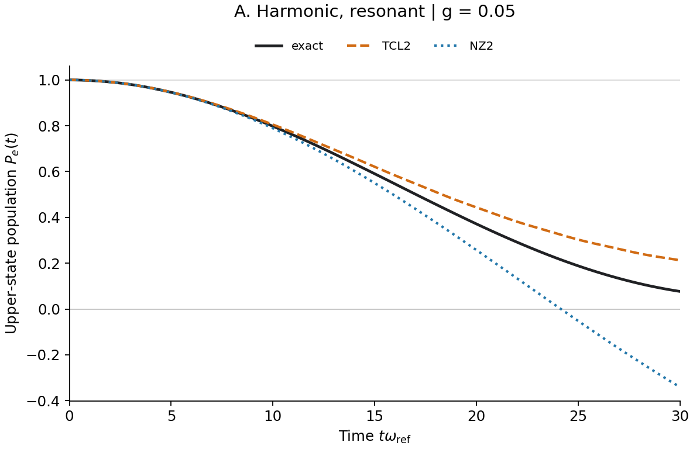
The actual zero lies between 24.1375 and 24.1500. At \(t=30\), the resonance estimate gives TCL2 \(0.2120\) and NZ2 \(-0.3416\); the full equations give \(0.2128\) and \(-0.3406\). The reference is \(0.0768\). The agreement with the estimates identifies a closure error, not a failure to compute the bath spectrum.
B. A low plateau misses coherent return

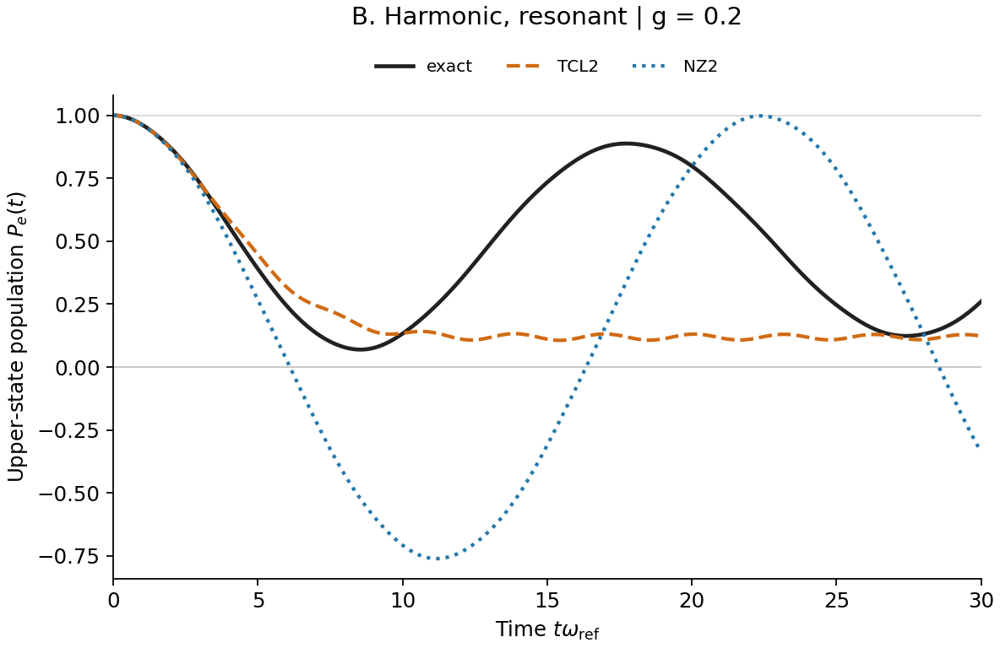
The orange curve is smoother and stays positive here, but it loses the main physical event: population returns from the mode to the electronic system. NZ2 preserves oscillatory structure without the correct quantum exchange. Neither visual smoothness nor the mere presence of oscillations establishes accuracy.
C. Strong coupling lies outside the simple resonance estimate

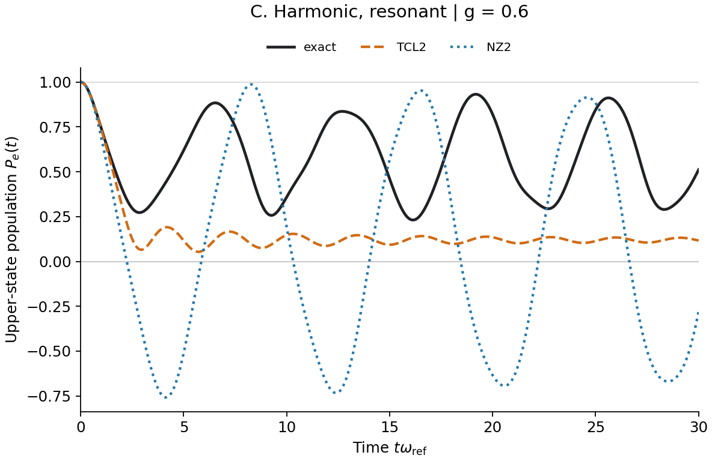
Here \(g/\Delta\) is not a small parameter. The rotating-wave estimate can help recognize a qualitative mechanism, but its detailed frequency and zero times are no longer controlled predictions of the full equations.
6. Examples D–F: harmonic detuning
Keep the same bath and change only the electronic gap to 1.6. A detuned oscillatory kernel can cancel rather than accumulate. This control tests resonance directly, without changing Gaussianity or introducing anharmonicity.
D. Weak coupling and detuning protect this finite window

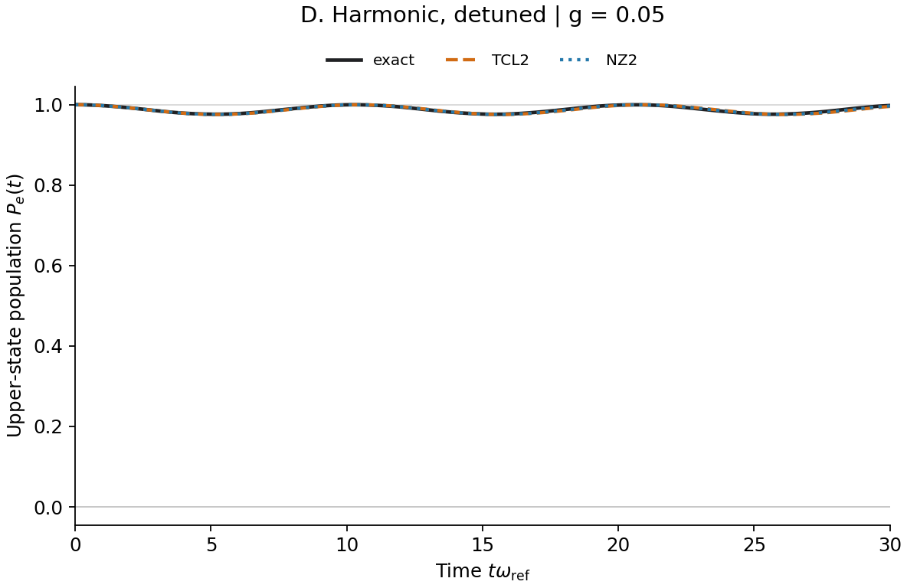
The maximum full-density errors over all three preparations are \(0.00376\) for TCL2 and \(0.00265\) for NZ2. Both satisfy the study's 0.01 absolute-error criterion. NZ2 is slightly better here, so even this small set already rules out a universal TCL2-over-NZ2 ranking.
E. An acceptable-looking population does not certify the density matrix

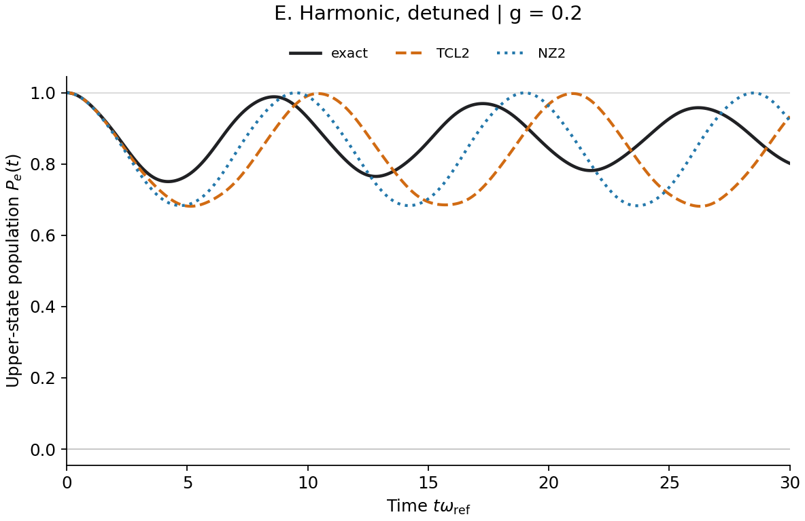
For the coherent initial preparation, NZ2 has a minimum density eigenvalue of about \(-0.00512\). That violation is invisible in this initially excited population panel. A single population between zero and one cannot replace a full-density positivity check.
F. Detuning is not protection against arbitrary coupling

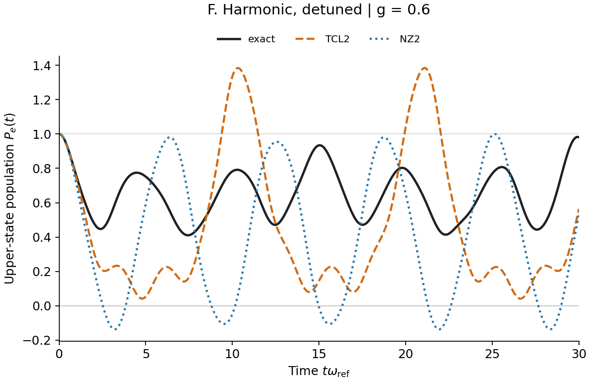
The dominant detuning is 0.6, now comparable to \(g\). The small ratio that protected D is gone. The orange curve demonstrates that TCL2 has no general positivity guarantee.
7. Examples G–I: weak anharmonicity
For \(\kappa=0.01\), the first-order level spacing is \(E_{n+1}-E_n=1+3\kappa(n+1)+O(\kappa^2)\). Tuning to the lowest transition leaves nearby thermally occupied transitions only weakly detuned. Their phase difference is of order 0.9 over \(t=30\) in this estimate. Weak anharmonicity therefore does not establish a rapidly decaying bath correlation.
G. The harmonic failure pattern survives

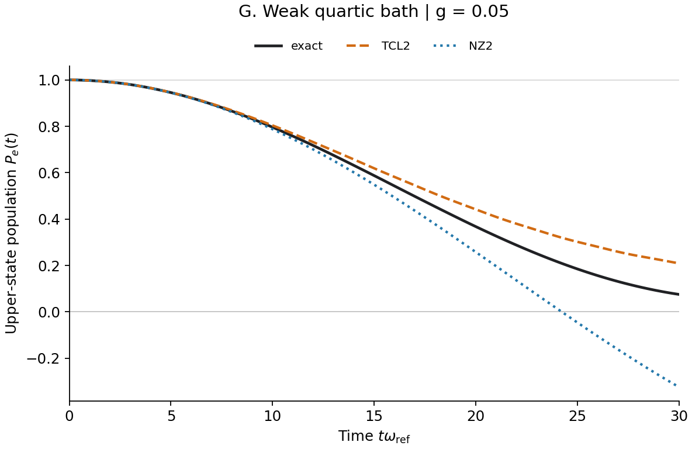
At \(t=30\), TCL2 gives 0.2092, NZ2 gives −0.3243, and the reference gives 0.0752. Those values are close to A. Retaining only the ground-to-first-excited bath line would miss important nearby thermal lines and is not a reliable quantitative reduction here.
H. A weak quartic term does not remove the reference revival

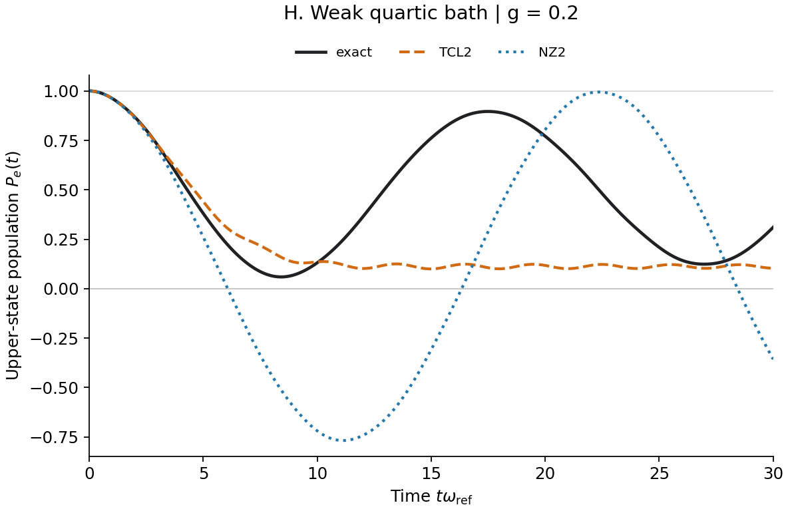
Changing the spectrum and introducing non-Gaussian statistics modifies the curves, but does not repair the underlying long-time closure error. A bath with slightly unequal level spacings is still a confined discrete quantum system.
I. Strong electronic coupling remains the dominant challenge

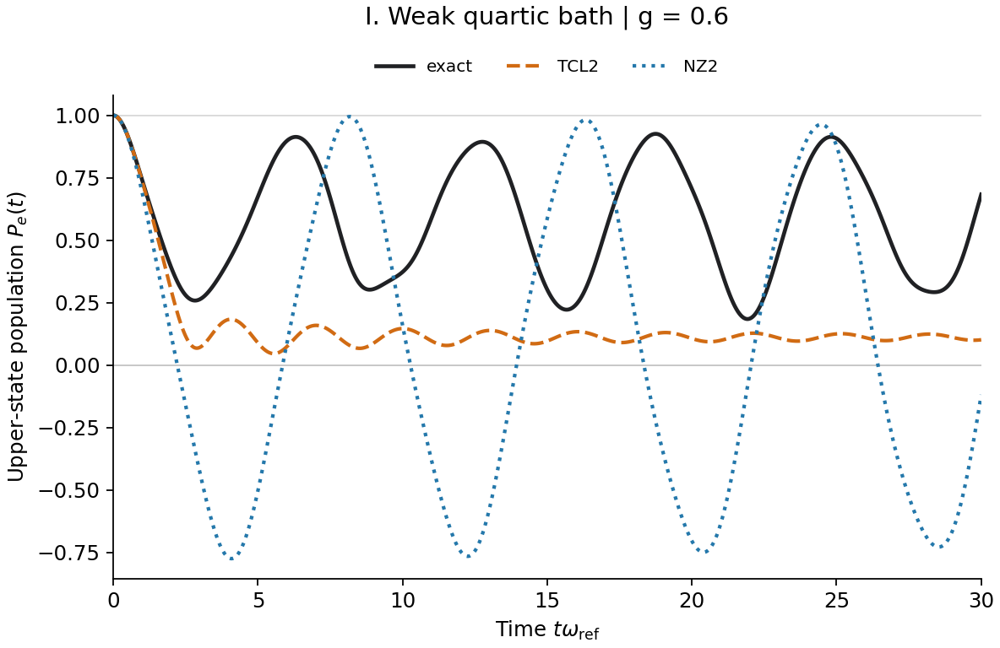
The word “weak” describes the quartic coefficient, not the electronic coupling. These are independent approximation parameters. Small \(\kappa\) cannot justify truncating at small \(g\) when \(g\) is actually large.
8. Examples J–L: strong anharmonicity
For \(\kappa=0.5\), the low-energy gap increases and higher bath levels become less thermally occupied. The \(0\leftrightarrow1\) line carries about 0.93952 of the normalized correlation weight. Its thermal ratio gives \(p_*\simeq0.03710\). Unlike the weak-quartic case, this dominant-line reduction is a useful small-coupling estimate, although the bath is not literally a two-level system.
J. A dominant line predicts the negative crossing

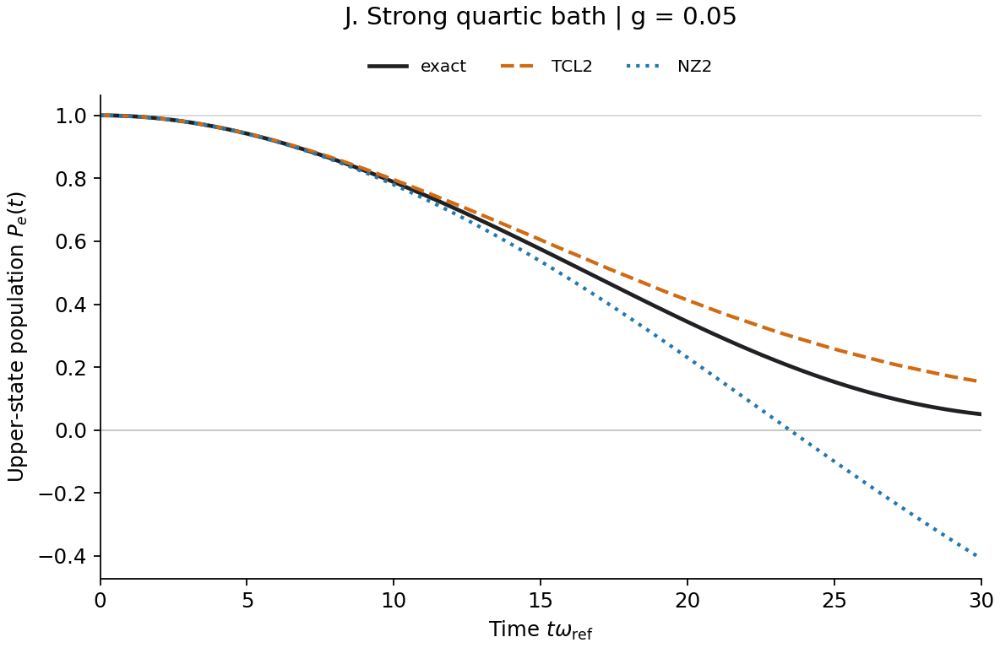
The estimate gives \(P_e(30)\simeq0.1534\) for TCL2 and \(-0.4121\) for NZ2. The full second-order equations give \(0.1536\) and \(-0.4083\); the reference is \(0.0506\). Strong anharmonicity does not prevent an accurate explanation of how the approximate equations fail.
K. Strong anharmonicity does not imply short memory

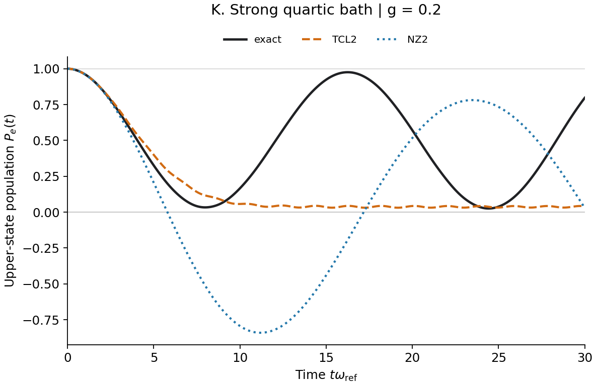
A low-temperature dominant transition can make the reference exchange especially clear. Non-Gaussian statistics and long memory are separate properties. Confinement and discrete lines remain even when the potential is strongly quartic.
L. Neither closure is reliable at strong coupling

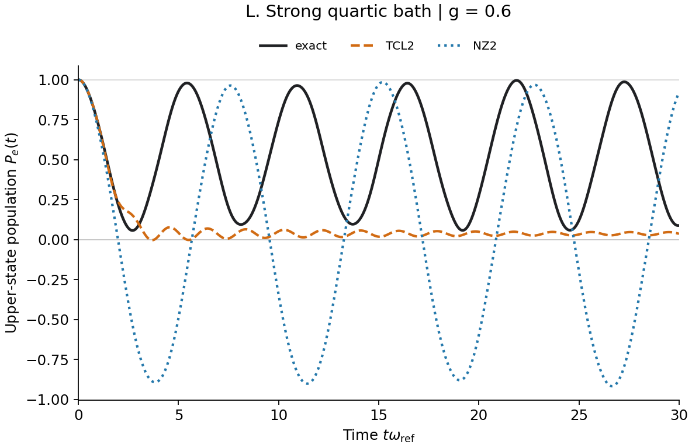
The upper-state TCL2 population reaches about \(-0.00356\); the minimum eigenvalue across all three initial preparations is about \(-0.01378\). Neither value should be clipped or dismissed because the orange curve looks comparatively stable.
9. What the comparison establishes
Numerical convergence and physical accuracy are different questions. The reference, TCL2 and NZ2 can all be numerically converged while the latter two solve inaccurate reduced equations. The raw negative values are retained because they diagnose the approximation.
The wider comparison uses the maximum full-density error over three preparations and the whole observation window:
The numerical maximum is evaluated on the saved time grid, with the separate refinement controls described above. The declared accuracy criterion is \(\epsilon\le0.01\), together with density eigenvalues no smaller than \(-10^{-7}\), on those preparations. This is an absolute density error, not a relative error in a small transfer probability. Once an approximate density is nonpositive, half the trace norm of its difference remains a useful matrix diagnostic, but need not have the operational interpretation or upper bound of trace distance between physical states.
| Bath/gap | \(g\) | TCL2 \(\epsilon(30)\) | NZ2 \(\epsilon(30)\) | Interpretation |
|---|---|---|---|---|
| Harmonic, resonant | 0.05 | 0.1360 | 0.4175 | Both inaccurate; NZ2 nonpositive |
| Harmonic, detuned | 0.05 | 0.00376 | 0.00265 | Both pass; NZ2 slightly closer |
| Weak quartic, resonant | 0.05 | 0.1351 | 0.3996 | Weak anharmonicity does not repair the closure |
| Strong quartic, resonant | 0.05 | 0.1283 | 0.4589 | TCL2 worst error occurs for the coherent initial state |
| Strong quartic, resonant | 0.6 | 0.9810 | 1.8433 | Both severely inaccurate and nonpositive |
Three lessons follow. First, retaining the density history is not a higher-order approximation: NZ2 is not systematically above TCL2. Second, exact two-point input cannot remove the neglected reduced-system orders, or the additional higher bath correlations of a non-Gaussian environment. Third, increasing anharmonicity does not universally increase the error: at \(g=0.05\), the TCL2 error decreases from 0.1360 through 0.1351 to 0.1283, while the NZ2 error first decreases and then increases.
Changing \(\kappa\) also changes the spectrum, matrix elements and thermal occupations, and the gap is retuned to each bath's lowest transition. It is not an experiment that varies only “non-Gaussianity.” Nor can a large \(\kappa\) turn one undamped mode into a macroscopic short-memory reservoir.
The special exactness of TCL2 for Gaussian pure dephasing is useful as a control, not a population-transfer theorem; see Fetherolf and Berkelbach, Section II. Conversely, an auxiliary representation of NZ2 remains NZ2. For Gaussian baths, converging the higher HEOM tiers from Part I can recover contributions absent from either second-order equation. Feeding only \(C(t)\) from a genuinely non-Gaussian bath into a Gaussian hierarchy does not recover that bath's missing higher correlations.
For applications, method choice must therefore be checked against coupling, resonance, bath memory, the preparation, the observable and the required time window. These examples isolate closure error using spectral correlations. They do not validate RPMD correlations for anharmonic materials, or establish a correction to a particular mixed quantum–classical production workflow.
10. Reproducible code and data
The public bundle contains the frozen benchmark runner and configuration, twelve lossless CSV exports, the plotting script, the full comparison table and provenance checksums. It depends on NumPy, SciPy and Matplotlib. The plotter uses every saved sample without smoothing, interpolation or probability repair.
- Reproduction instructions and numerical conventions.
- Download the self-contained source and data bundle.
- Frozen quantum-reference, TCL2 and NZ2 runner; configuration.
- Gallery plotter and curve checks; twelve CSV links and checksums.
- Full three-preparation comparison table; per-curve numerical diagnostics.
The displayed 36 curves pass the original numerical smoothness thresholds. Integration and basis checks are separate from that display check. The broader study contains 42 parameter points and six model families, including pure-dephasing controls; this article selects the twelve transfer examples above.
References
- A. P. Babu, S. Alipour, A. T. Rezakhani and T. Ala-Nissila, “Unfolding system-environment correlation in open quantum systems: Revisiting master equations and the Born approximation.” Open manuscript, Sections II.1–II.2.
- J. H. Fetherolf and T. C. Berkelbach, “Linear and nonlinear spectroscopy from quantum master equations.” Open manuscript.